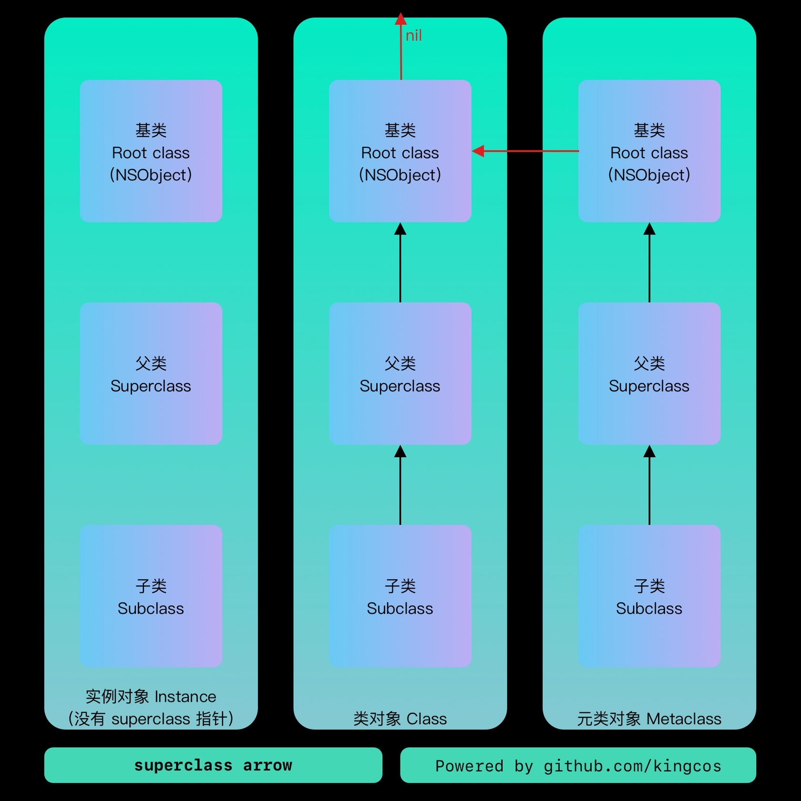
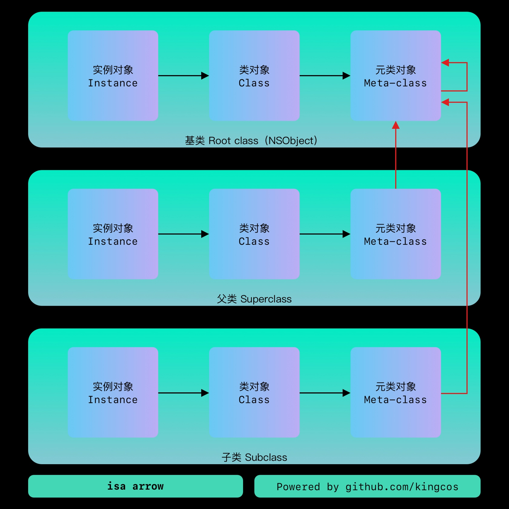

Object
Objective-C 中的对象

NSObject 定了 isa 指针，用于指向 Class ，而 Class 本质上则是指向 objc_class 结构体的指针：
// NSObject.h
@interface NSObject <NSObject> {
#pragma clang diagnostic push
#pragma clang diagnostic ignored "-Wobjc-interface-ivars"
Class isa OBJC_ISA_AVAILABILITY;
#pragma clang diagnostic pop
}
而 Class 的本质则是指向 objc_class 结构体的指针，存放了 isa 、 superclass 、方法缓存等。
typedef struct objc_class *Class;
// objc-runtime-new.h
struct objc_class : objc_object {
// Class ISA;
// 父类指针
Class superclass;
// 方法缓存
cache_t cache; // formerly cache pointer and vtable
// 可读可写表（class_rw_t）等
class_data_bits_t bits; // class_rw_t * plus custom rr/alloc flags
// ...
};
// objc-private.h
struct objc_object {
private:
// isa 指针
isa_t isa;
// ...
}
struct class_data_bits_t {
// Values are the FAST_ flags above.
uintptr_t bits;
class_rw_t* data() {
return (class_rw_t *)(bits & FAST_DATA_MASK);
}
// ...
}
bits 标志位作用：
- 0 - 1 ，
FAST_IS_SWIFT_LEGACY，是否来自 ABI 预稳定版本的 Swift ； - 1 - 2 ，
FAST_IS_SWIFT_STABLE，是否来自 ABI 稳定版本的 Swift ； - 2 - 3 ，
FAST_HAS_DEFAULT_RR，类或父类含有默认的持有或引用； - 3 - 47 ，
FAST_DATA_MASK，指向class_rw_t结构体的指针； - 47 - 63 ，字节对齐，填 0 。
class_rw_t 是可读可写， Read-Write ，在运行时会进行调整，而 class_ro_t 是只读的，在编译期已经确定，无法调整。
struct class_rw_t {
// Be warned that Symbolication knows the layout of this structure.
uint32_t flags;
uint32_t version;
// 只读表的指针（const：不可修改指针指向内存空间中的数据）
const class_ro_t *ro;
// 方法、属性、协议信息，可用于运行时动态添加
method_array_t methods;
property_array_t properties;
protocol_array_t protocols;
// ...
};
class_ro_t 在编译时会被动态替换为 class_rw_t ，而 class_rw_t 则会通过指针指向 class_ro_t ：
struct class_ro_t {
// 标志位
uint32_t flags;
uint32_t instanceStart;
// 实例大小
uint32_t instanceSize;
#ifdef __LP64__
uint32_t reserved;
#endif
const uint8_t * ivarLayout;
// 类名
const char * name;
method_list_t * baseMethodList;
protocol_list_t * baseProtocols;
// 成员变量
const ivar_list_t * ivars;
const uint8_t * weakIvarLayout;
property_list_t *baseProperties;
method_list_t *baseMethods() const {
return baseMethodList;
}
};
从上面的 class_rw_t 和 class_ro_t 可以看出为什么 Category 不支持添加变量，因为 Category 相关方法和属性是添加到 class_rw_t 中的，而 class_ro_t 表示的示例大小和属性在编译时已经确定了，不支持在运行时进行修改。
基类：

isa 指针

实例对象中的 isa 指向类对象，类对象中的 isa 指向元类对象，元类对象中的 isa 指向根元类对象（包括根元类对象也指向自己）。 isa_t 通过 union 来共享内存占用：
struct objc_object {
private:
isa_t isa;
// ...
}
union isa_t {
isa_t() { }
isa_t(uintptr_t value) : bits(value) { }
Class cls;
uintptr_t bits;
#if defined(ISA_BITFIELD)
struct {
ISA_BITFIELD; // defined in isa.h
};
#endif
};
// isa.h
// ARM 64
# if __arm64__
# define ISA_MASK 0x0000000ffffffff8ULL
# define ISA_MAGIC_MASK 0x000003f000000001ULL
# define ISA_MAGIC_VALUE 0x000001a000000001ULL
# define ISA_BITFIELD \
uintptr_t nonpointer : 1; \
uintptr_t has_assoc : 1; \
uintptr_t has_cxx_dtor : 1; \
uintptr_t shiftcls : 33; /*MACH_VM_MAX_ADDRESS 0x1000000000*/ \
uintptr_t magic : 6; \
uintptr_t weakly_referenced : 1; \
uintptr_t deallocating : 1; \
uintptr_t has_sidetable_rc : 1; \
uintptr_t extra_rc : 19
# define RC_ONE (1ULL<<45)
# define RC_HALF (1ULL<<18)
// _uintptr_t.h
#ifndef _UINTPTR_T
#define _UINTPTR_T
typedef unsigned long uintptr_t;
#endif /* _UINTPTR_T */